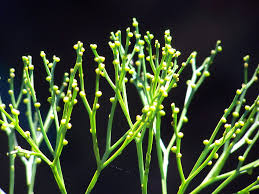

Psilotaceae
Whisk Fern Family
Psilotaceae is the only family in the order Psilotales, an ancient lineage often considered "fern allies." It comprises just two genera (Psilotum and Tmesipteris) and about 10-17 species. These unique vascular plants are characterized by their lack of true roots (using rhizoids instead), simple or absent leaves (or leaf-like appendages), dichotomously branching stems, and eusporangiate sporangia fused into synangia. They share subterranean, mycoheterotrophic gametophytes with their sister group, the Ophioglossales.
Overview
The Whisk Fern family, Psilotaceae, represents one of the earliest diverging lineages among living vascular plants, sister to the Ophioglossales (Adder's-tongues). Their simple body plan – lacking true roots and possessing highly reduced or absent leaves – led historically to suggestions that they might be descendants of the very first land plants (like rhyniophytes), but molecular data firmly places them within the monilophyte clade (ferns and horsetails), specifically as sister to Ophioglossales.
Psilotum species are pantropical/subtropical and often grow terrestrially, on rocks, or as epiphytes, resembling small, green, leafless brooms. Tmesipteris species are mostly epiphytic, primarily found in the South Pacific (Australia, New Zealand, etc.), often growing on tree ferns, and possess more prominent, flattened leaf-like appendages. Both genera rely on mycorrhizal fungi for nutrient uptake via their rhizomes and rhizoids, and their gametophytes are entirely dependent on these fungi.
Psilotaceae has minimal economic importance, but species like Psilotum nudum are often studied in botany courses as examples of simple vascular plant structure and are sometimes cultivated as curiosities. Their unique morphology and phylogenetic position make them crucial for understanding the evolution of fundamental plant structures like roots, leaves, and sporangia.
Quick Facts
- Scientific Name: Psilotaceae
- Common Name: Whisk Fern family
- Number of Genera: 2 (Psilotum, Tmesipteris)
- Number of Species: Approximately 10-17
- Distribution: Pantropical/subtropical (Psilotum); South Pacific (Tmesipteris).
- Evolutionary Group: Monilophytes - Ophioglossidae - Psilotales (Eusporangiate Fern Allies)
Key Characteristics
Habit and Vegetative Structure
Plants are perennial herbs, often epiphytic or terrestrial/epipetric. A defining feature is the complete absence of true roots; anchorage and absorption are handled by rhizoids on a subterranean, branched rhizome which is associated with mycorrhizal fungi. Aerial stems are green, photosynthetic, typically dichotomously branching, and may be cylindrical, ribbed, or flattened.
Leaves (or Appendages/Enations)
True leaves (megaphylls with complex vasculature) are considered absent. Instead, aerial stems bear small, simple appendages:
- In Psilotum: Appendages (often called enations) are small (1-2 mm), scale-like or awl-shaped, lack vascular tissue (or have a simple trace), and are arranged spirally or in ranks along the stem ridges.
- In Tmesipteris: Appendages are larger (up to 2.5 cm), flattened, leaf-like in appearance, simple or sometimes bilobed at the apex, possess a single unbranched vein, and are typically arranged spirally.
Stipules are absent.
Reproductive Structures (Synangia, Spores)
Reproduction is via spores produced in unique structures called synangia.
- Sporangia Arrangement: Sporangia are eusporangiate (large, thick-walled, developing from multiple cells). They are characteristically fused together into structures called synangia. Each synangium consists of 2 lobes (bilocular, in Tmesipteris) or 3 lobes (trilocular, in Psilotum).
- Synangium Position: Synangia are borne on short lateral stalks on the aerial stems, often associated with a forked appendage (sporophyll). They are exposed, relatively large, and typically yellow or brownish when mature.
- Associated Structures: There are no sori and no indusia. Sporangia also lack an annulus. Dehiscence occurs via slits on each lobe of the synangium.
- Spores: Produced in large numbers. Spores are monolete (single linear scar), bilateral, and bean-shaped. They are non-green and thick-walled.
Gametophyte
Similar to Ophioglossaceae, the haploid gametophyte is subterranean, non-photosynthetic, typically cylindrical and branched, brownish or whitish. It is mycoheterotrophic, relying entirely on mycorrhizal fungi for nutrition, and bears both antheridia and archegonia.
Field Identification
Identifying Psilotaceae relies on recognizing their highly distinctive, simple vegetative structure and unique reproductive organs:
Primary Identification Features
- Absence of True Roots: Plants anchored by rhizoids on underground rhizomes.
- Dichotomously Branching Green Stems: The most conspicuous part of the plant, repeatedly forking into two equal branches.
- Reduced "Leaves": Small, scale-like enations (Psilotum) or larger, simple, flattened appendages (Tmesipteris) on the aerial stems.
- Synangia: The presence of 2- or 3-lobed, fused sporangial structures (yellowish/brownish) borne on the aerial stems is diagnostic.
- No Sori, No Indusium, No Annulus: Spore structures are fundamentally different from most ferns.
- Habitat: Often epiphytic or growing in rock crevices or disturbed soil in tropical/subtropical areas (Psilotum); epiphytic on tree ferns or trees in South Pacific (Tmesipteris).
Secondary Identification Features
- Stem Shape: Often ribbed or angled (Psilotum) or flattened (Tmesipteris).
- Monolete Spores: (Requires microscopy).
- Mycoheterotrophic Gametophyte: Subterranean and not visible for field ID.
Seasonal Identification Tips
- Sporulating Season: Synangia are most apparent when mature and yellowish/brownish, before dehiscing.
- Vegetative State: The rootless habit, dichotomous stems, and unique appendages are identifiable year-round.
Common Confusion Points
- Leafless Succulents/Cacti: Some unrelated desert plants have green, branching stems, but possess true roots, different surface textures (spines, areoles), and produce flowers and fruits, not synangia.
- Equisetaceae (Horsetails): Have green, branching stems but these are distinctly jointed with whorls of scale-like leaves at the nodes, contain silica, and produce spores in terminal cones (strobili). Possess true roots.
- Lycopodiaceae (Clubmosses): Have dichotomous branching and simple leaves (microphylls), but possess true roots, leaves typically cover the stem densely, and spores are borne in kidney-shaped sporangia often aggregated into strobili.
- Some Algae or Fungi: Superficially similar branching patterns might occur, but Psilotaceae are vascular plants with distinct stems and reproductive structures (synangia).
Field Guide Quick Reference
Look For:
- No true roots
- Dichotomously branching green stems
- Small scale-like appendages OR larger flattened appendages
- Synangia (2- or 3-lobed fused sporangia) on stems
- No sori, no indusium, no annulus
- Spores monolete
- Often epiphytic or epipetric
Key Distinctions:
- vs. Most Plants: Psilotaceae lacks roots.
- vs. Horsetails: Psilotaceae stems not jointed, lacks cones.
- vs. Clubmosses: Psilotaceae lacks true roots, has synangia not single sporangia/cones.
- vs. Ophioglossaceae: Psilotaceae lacks distinct trophophore/sporophore frond, has synangia, monolete spores.
Notable Examples
The family contains only two extant genera:

Psilotum nudum
Whisk Fern
The most common species, found in tropical and subtropical regions worldwide. Has green, dichotomously branching, ribbed stems with tiny, scale-like appendages (enations). Bears 3-lobed yellow synangia. Often grows terrestrially, on rocks, or as an epiphyte.

Tmesipteris tannensis
(No common name)
A representative species of the genus endemic to the South Pacific (New Zealand, Australia, etc.). Typically epiphytic, often on tree ferns. Stems are less branched than Psilotum, bearing larger, flattened, leaf-like appendages. Synangia are 2-lobed.
Phylogeny and Classification
Psilotaceae is the sole family in the order Psilotales. Together with the Ophioglossales, it forms the subclass Ophioglossidae, which represents one of the earliest diverging lineages of extant ferns (Polypodiopsida), sister to all other ferns combined (Marattiidae + Polypodiidae).
The extremely simple morphology of Psilotaceae (lacking roots and true leaves) historically led to debates about their evolutionary position, with some suggesting they were living descendants of early land plants like rhyniophytes. However, molecular data unequivocally places them within the ferns, specifically as the sister group to Ophioglossales. This suggests their simple structure is likely a result of evolutionary reduction rather than primitive retention from the earliest land plants. The shared features with Ophioglossales, such as eusporangiate development and subterranean mycoheterotrophic gametophytes, support this close relationship.
Position in Plant Phylogeny
- Kingdom: Plantae
- Clade: Tracheophytes (Vascular Plants)
- Clade: Monilophytes (Ferns and Horsetails)
- Class: Polypodiopsida (Ferns)
- Subclass: Ophioglossidae
- Order: Psilotales
- Family: Psilotaceae
Evolutionary Significance
Psilotaceae holds significant evolutionary interest:
- Basal Fern Lineage: As sister to Ophioglossales, they provide crucial insights into the early evolution of ferns and the Ophioglossidae subclass.
- Morphological Simplicity: Their lack of roots and true leaves raises fundamental questions about plant body plan evolution – whether this simplicity is primitive or derived through reduction. Molecular data strongly supports reduction.
- Life Cycle: Share the unusual subterranean, mycoheterotrophic gametophyte stage with Ophioglossales, highlighting an alternative life history strategy among early ferns.
- Reproductive Structures: The formation of synangia (fused sporangia) is a distinctive feature among living vascular plants.
- Historical Debate Resolution: Represents a classic example where molecular data resolved long-standing debates based purely on morphology, confirming their placement within ferns.